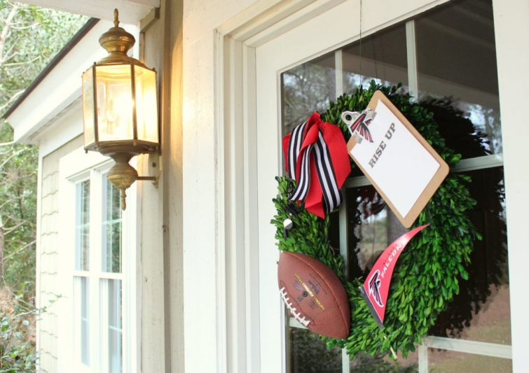
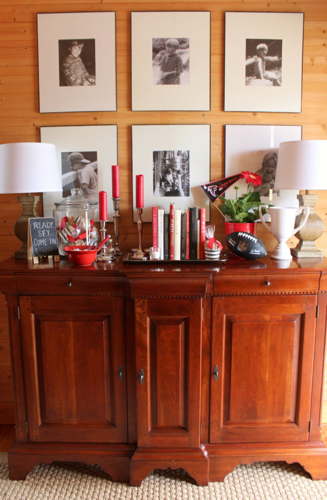

.png)
.PNG)
.PNG)
.PNG)
.PNG)
.PNG)
.JPG)
.JPG)
.PNG)
.PNG)


.jpg) Well….what. a. game. If we could have just ended it at half time. But I guess if a team can come back from being down 25 points, they deserve the win. Regardless, it was an exciting game to watch, and if you are a Patriots fan, congratulations. It is going to take a while for those of us who are Falcons fans to get over it. 🙁
Well….what. a. game. If we could have just ended it at half time. But I guess if a team can come back from being down 25 points, they deserve the win. Regardless, it was an exciting game to watch, and if you are a Patriots fan, congratulations. It is going to take a while for those of us who are Falcons fans to get over it. 🙁

We did have a party, and I did decorate a bit for the occasion. If you follow me on Instagram, see if you can tell any difference in the wreath from my post there on Saturday and this photo on Sunday. 🙂

I took photos as I finished getting areas ready yesterday, and I had planned to post them here right before the game.

But as usual, I was finishing up everything right as our guests arrived. (In fact I was vacuuming the kitchen when the doorbell rang!) So there was no time to load the photos here. Perhaps you can save any ideas you like to a Pinterest board for next year.

The red and black of the Falcons’ uniform was obviously an easy color scheme to implement here. So I put it everywhere that didn’t already have it. 🙂 The take home treats were bags of roasted peanuts in the referee-striped cups tied with a red ribbon.

I also jazzed up the cabinet in the family room with some extra red and black.

And of course the mantel in the family room had to have its share of football accessories as well.

I found those trophy looking vases at Michaels (at 40% off! 🙂 ) and I’m sure they will get good use around here.

Simply swapping out the photos in the frames for some Falcons prints was an easy way to add a little game day decor.


For easy access, we set up the beverage area on the game table in the family room. Remember I took these photos yesterday as I finished decorating each area. So the empty red bucket held ice during the game.

Super Bowl commercials are always a favorite part of the game. When I came across these printable bingo cards on Pinterest, I knew it would be fun for everyone to play. I did a little research and came up with a number of companies who would likely have ads during the game. (That’s the list on the big clipboard.) Everyone just chose 24 and filled in the spaces on their card with them.

I had planned to use sticky note flags as markers on the boards (so they would not move during the game) but we used our pencils instead to mark out the squares that had the companies as the ads came on. Much simpler!

And now to the dining room. This is the table set up ready for the party (without all the food obviously.) I wanted to make a tissue paper garland to go above the window, but I ran out of time before I could get it made. (I seem to always have more ideas than time!)

A little flag was added to the cupboard after the table was set…

and the cabinet got one too.

Early last week, I sat down to plan the menu for this get-together. Then I went back to a Super Bowl party post I had written a couple of years ago to see what we served then. Amazingly, it was the exact same menu! So in order to not be “stuck in a rut,” I totally changed direction and went with this instead:

And after the first few guests served their plates, I remembered to take a photo of the table with the actual food on it (minus what they already had on their plates.)

Even though the Falcons lost, we still had a fun time together. (But the first half of the game was much more enjoyable than the second.) All of us wore our red and black for the game…

even Gabbie
(the girl pup who looked like a “boy” in her jersey.) 🙂

I hope the Falcons make it back to the Super Bowl next year (and I can reuse all my accessories! 🙂 )Now on to Valentine’s Day decorating!
Hope your week is off to a great start!
Until next time…


.PNG)
Totally addicted to your posts! You have so many great ideas. Can’t wait to see what you do for Valentines. It’s always a tricky event here since it is also our son’s birthday. Looking forward to your next post!
——————————————————————–
Wow! Thank you Amanda! That would be tricky to have a boy’s birthday along with Valentine’s Day. My husband’s birthday is the day after it, so at least it is not on the actual day. Good luck with your planning!
Kelly
Kelly,
As usual you’ve knocked it out of the park! I was rooting for the Falcons but alas, the other team won. The Patriots played a great second half. The highlight for me, besides the commercials, was the catch by the Falcon that seemed impossibly and so impressive.
I cannot believe how much Gabbie has grown.
xo,
Karen
——————————————————————-
Thank you so much Karen. Glad you were rooting for the Falcons too! I was very impressed with that catch as well. Amazing what those athletes can do!
Yes, Gabbie is growing right before our eyes. She has gotten almost too heavy for me to pick up!
Kelly
Lol Kelly! I thought I was the only one who who still is vacuuming when guests arrive! 😁
—————————————————————–
No Cindy, I’m afraid I am a part of that club as well. In fact there have been times when I have been vacuuming and still had curlers in my hair!
Kelly
Great party ideas! Maybe we can use them next year when the Falcons go back! I especially like your trophy vase and striped accessories. How precious are your daughter and Gabby!!! Josie’s party was so much fun! She decorated Kelly-style and went all out to make sure everyone had a great time…right, DiAnne and Katrina? You might find this funny. When the Patriots scored that last touchdown I said, “They are celebrating like they have already won the game.” LOL! As I said when my son played football his senior year of high school, “I am not a football mom!”
——————————————————————–
I sure hope you are right about using the decor next year when the Falcons are back in the Super Bowl again! I knew you would have a great time at Josie’s. I would have loved to have there with you all! 🙂 Your comment about the celebrating cracked me up! If it had been college football, Atlanta would have had a chance to possibly score. Wish that was the format in the NFL! So much rides on the darn coin flip in NFL games I think.
Kelly
Hi Kelly: I love that you set the tone of the party right at the door…great wreath! You always think of every detail.
Great pic of your daughter and Gabbie.
We were disappointed with some of the Super Bowl commercials. My favorite was the one with Melissa McCarthy.
Cindy
———————————————————————
Thank you Cindy. The wreath was a last minute thing, but I think it turned out cute for the occasion. The commercials were missing the “horse and puppy” commercials. It seemed that “accepting people’s differences” was a common theme in so many of them. The Melissa McCarthy one WAS hilarious!! My favorite was the Honda one with all the yearbook photos of today’s stars that came to life…especially liked Steve Carell’s!
Kelly
We also enjoyed the first half much more than the second! Lots of cheers over here in Texas from some displaced Georgians. The decor at your house looks great and the menu does too. Hoping our Falcons Rise Up again next year 🏈
——————————————————————–
Thank you for cheering in Texas Leigh! I too hope they make it back to the Super Bowl next year.
Kelly
Someday I want to come to a party at your house! You are amazing!
——————————————————————–
Aw thanks Cindy! You come on over to Georgia any time you like!
Kelly
I always seem to have tons of ideas, too and not enough time. The Falcons turned into my Packers, for the second half but you know what they say about Karma. The Falcons gave it to us and the Pats gave it to the Falcons. I really did not want the Patriots to win. Enough about football-I truly enjoy your posts and your decor, can’t wait to see V-day decorations.
——————————————————————
Glad you liked all the decorating Jo Anne. Yep, those Falcons let us down in the second half when the Patriots came to life. Here’s to a second chance next year!
Kelly
As I said on FB, I rooted for the Falcons even though I don’t DO football. So sad they had such a great lead, but the Patriots got the momentum in the second half. Nail biting 4th quarter! And Gaga was great (not that I know much about her!) All in all, a great Super Bowl!
Loved your party setup, as always! Your guests I’m sure appreciate all that you do to make them feel welcome. I don’t know that I would have thought to hang a themed wreath on my door, but you did! Shows you how many football parties I throw, right? I know my daughter would do something like that!
Now, on to baseball! 😉
——————————————————————-
Thank you for cheering on the Falcons Marianne. Definitely a stressful 4th quarter! I actually enjoyed Lady Gaga’s show too…but probably because our daughter was singing along with her and knew all the words to the songs! LOL
Thank you for the compliments on the party decor. Don’t jump into baseball just yet…we still have March madness to go! 🙂
Kelly
I always love your parties!! This one did not disappoint! i wish the falcons had won too, was happy for a couple of players we follow on the Patriots. Ha, I couldn’t stay awake for the end so I found out this morning who won. I had partied in another way this weekend. We found out our daughter is having twin GIRLS at their gender reveal party!! 🙂 I can just imagine what an awesome job you would do planning one of those parties!! 😉
——————————————————————-
Thank you so much Gina! You didn’t see the 4th quarter?! Man…it was stressful! Congratulations on the twin girls!!! One of my teacher friends has them as well and found out on the twins’ first birthday that she was pregnant again. They have a son due this month now! Best wishes to your daughter and her family. 🙂
Kelly
I’m so saaaadddd about the game! Oh well, now I’m over it. Your party was fabulous, and save those decorations for next year when the Falcons make it into a big WIN!
——————————————————————-
Too funny! I am still not over it. 🙁 Hoping they make it back for the Super Bowl again next year too.
Kelly
Kelly, I loved your Superbowl LI decorations! And especially Gabbie all decked out 🙂 She is absolutely gorgeous XOXO
Sorry for your Falcons…my nephew who attended GA State in Sports Management wanted them to beat MY Patriots so badly…yes, I am a diehard New England Patriots fan, even here in Virginia lol I was surprised how many of us wore our gear at the supermarkets yesterday before the big game. And what a game it was! What a lesson in nothing is impossible! But Atlanta is an amazing young team, and I’m certain they’ll be back…
Thanks also for your menu…love the deliciousness and simplicity…two key ingredients for game time!
As today’s Boston Herald headline declared over Brady’s photo –
“ROGER THAT” XOXO 😉 mari
——————————————————————-
Mari, thank you for your very sweet compliments on the party. It sounds like you had some family rivalry going on for the game! (Just wish your nephew’s team had won! LOL)
Kelly
Wow, Gabbie has grown so much, so quickly! Cutest Falcon “kid” ever! Another great-looking party there. I’m still in mourning over the outcome, but seeing all your cute decor is cheering me up. Thanks for another delightful post filled with wonderful ideas! P.S. – I have to ask: did you actually find referee-striped mini-cups, straws, and Post-Its, or did you decorate them yourself?
—————————————————————–
Yes, Gabbie is growing tooooo fast! When I try to pick her up she is so long she seems to go on forever…all legs! I did find all the referee striped items…no time to make all of that. I am always on the look-out for things like that when shopping. 🙂
Thank you for reading and leaving your sweet words here Ruth. 🙂
Kelly
You sure know how to do a party right…everything is so cute.
We don’t have a favorite NFL team but we were hoping the Falcons would have won. It was a very close game and they can be proud of that. Next year.
——————————————————————
Thank you Cheri! And thank you for cheering on our Falcons. I sure hope you are right about next year!
Kelly
I loved seeing all of your great decorating and food ideas for your Super Bowl party…..especially the items that weren’t necessarily designed to be used at a football party, but fit perfect (plates & napkins, treat cups, etc.) Loved seeing how you incorporated everything into your home decor. We were rooting for the Falcons, too, and were disappointed they didn’t hold on for the victory! Looking forward to see your Valentine ideas…..
——————————————————————–
I’m so glad you liked all the party items Lanita. I like to use the referee striped items because they seem to go so well with the rest of our house decor. Perhaps next year will be the year for the Falcons.
Working on Valentine’s Day now! I need flowers, and for some reason my local source does not have what I need…too early for them I think.
Kelly
You are the only blogger I “follow”. I welcome each email I receive, that lures me into your home. You consistently freshen things up and have a knack for making your home crisp, yet comfortable. I love the wreath and the bingo idea! I could go on and on! Thanks for inspiring us and sharing good ideas! XOXO, A Loyal Follower
—————————————————————–
Gosh what sweet compliments Rachel! I’m so glad you find inspiration here in the posts. I loved the bingo game. It made it a lot of fun for everyone! (And we had prizes! LOL)
Kelly
Those Falcons have nothing to be ashamed of- it was one of the most exciting games I’ve seen in a while!! I was rooting for them because a young man from Southwest Florida was playing. But, the cutest thing in your blog today was Gabbie wearing that Falcon shirt. ! It was pure charm!
——————————————————————–
It really was an exciting game, wasn’t it Judy?! Gabbie did look cute in that jersey but everyone thought she was a boy dog though. Guess I should have gotten her the Falcons cheerleader dress instead! ha.
Kelly
Well, that was some game. We were pulling for the Falcons and couldn’t believe the 4th quarter! Who would have thought it would turn out like it did? Atlanta has nothing to be ashamed of, they played their hearts out.
Your Gabbie is sooo cute! We’re still “looking” for a dog and in fact went back out to the humane shelter Saturday afternoon. I saw a darling puppy that I instantly took to but we don’t really want to housebreak a dog….any helpful suggestions on how to avoid that (LOL)? I have two custom cut seagrass rugs as well as a “hide” and I know from experience the seagrass can’t be cleaned (at least that’s what a carpet cleaning pro told me) so we had to have a new rug made for the dining room when our last dog had a little accident….hubby wasn’t too happy with that!
We’re heading to son’s this weekend for a little Mardi Gras fun in Fairhope/Spanish Fort/Daphne. Since’s he about 15 minutes from Mobile we might go there as well. The kids love all the parades and floats. Trust me, I won’t be getting any beads the Bourbon Street way (LOL)!!!
———————————————————————–
That 4th quarter was a real killer. 🙁 Thank you for pulling for the Falcons.
I hope you find your dog soon. We are house breaking and crate training Gabbie. She has done very well except for the first week. She stays in the kitchen and dining area. There are no rugs in there, so that makes it easier. We had the crate beside the refrigerator the first week, and she did not like it. She kept going to sleep under the kitchen desk. So we bought a smaller crate, put it under the desk, and she has done great since then.
Have fun at Mardi Gras! Glad you are not getting your beads “the Bourbon Street way.” LOL 🙂
Kelly
Kelly,
I love your enthusiasm and decorations! Gabbie stole the show in her jersey! We were also rooting for the Falcons and were shocked by the outcome. Thanks for sharing! I can’t wait to see what you have in store for St. Valentine’s day.
Dawn
——————————————————————–
Yes, Gabbie certainly stole the show. She is normally not very good with strangers, but surprisingly she took a liking to one of the guys here and sat and watched the game with him! 🙂 The end of the game was certainly shocking. Valentine’s decorating in the works here. 🙂
Kelly
Darling decor!!! Great job !! Sorry your team lost! Love your pup !!
——————————————————————-
Thank you so much Cindy. Glad you liked the party decor!
Kelly
Your party looks so fun! I’m not one to even care about football – but that ending was history making!! And I agree Gabby is adorable!
——————————————————————-
Oh yes, that ending was definitely history making…and not in a good way for Atlanta. 🙁 Thank you for your sweet compliments Julia. 🙂
Kelly
That game was so good. Well, until the 4th qtr…but then again, what a come back. Hubby went to bed as soon as it was over. We were hoping for a Falcon win too. Glad you mentioned IG. I’m now following you there too!
——————————————————————-
If we could have just ended it at the half, right? 🙂 Thank you for following on IG, Maria. I am still trying to figure everything out on it…confusing myself with having two accounts – one for the blog and one for Gabbie. (Perhaps I should have just stuck to one! 🙂 )
Kelly
Doesn’t matter who won. Gabbie stole the show!!!!!!
What a girl. Get tired of her send me an email, I will come get her and give her a good home.
——————————————————————–
Ha ha! I think there are enough of us here who like her that she won’t be going anywhere, but I will keep your offer in mind if we get tired of her. 🙂
Kelly
I was rooting for the Falcon’s since my team (the Ravens) were not playing. Oh well! The party décor looked great!
Adorable puppy!!
———————————————————————
Thank you for cheering them on Lynda. Happy you liked the party decorations, and thank you for Gabbie’s compliment.
Hope you are having a good week!
Kelly
As always, your party ideas were so cute! Looking forward to seeing your Valentine decor. Sorry for your team but go Pats!
———————————————————————
Thank you for the compliments on the party Robin. Your Patriots played a heck of a game!
Kelly
How do you do it? I have tried to pull just household items together even books to highlight as you do for the season or occasion. I just can’t do it as well. Maybe it is the teacher’s background, I don’t know, but it looks great. Glad to see little Gabbie doing well. Now, if she will retrieve the ball. (LOL)
———————————————————————
Yep, it’s the teacher background. 🙂 (And sticking to only one or two colors with a neutral.) Gabbie does retrieve the ball (good joke!) but she doesn’t like to give it back to us….Oh well…one step at a time. 🙂
Kelly
Your party looked amazing!! And that Gabbie. . . .What a cutie! As a New England girl, I couldn’t help but think of how much fun the Falcons fans must have been having with that first half. (We were enjoying snacks but weren’t “feeling it” that first half.
Thanks for sharing your great ideas and your awesome home! I find it so inspiring!!
———————————————————————-
Thank Lori! That first half was fun for us, but goodness that ending was heartbreaking! I know you must have loved the final quarter and overtime. Congrats to the Patriots!
Kelly
Every detail perfect! It was a fun game to watch for those of us that were neutral, not so much for you I know☹️
——————————————————————-
Thank you Sue. Yes, it would have been a very fun game to see if we had not been pulling for the Falcons. 🙁
Kelly
Your decor and menu are wonderful. Sorry your team lost, but I agree, it really was an amazing game.
——————————————————————-
Hi Marty! Thank you for your compliments on the party. Yes, it was an amazing game…but sad for those of us who were pulling for the Falcons. 🙁 Quite a comeback for the Patriots!
Kelly